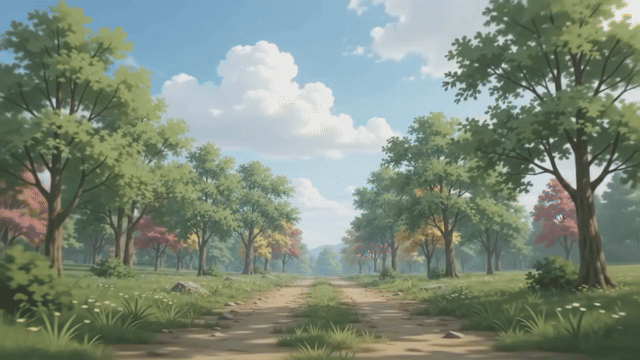

Sampah yang terkumpul sampai saat ini

Langkah kecil, dampak besar
Ubah Sampah
Menjadi Uang
Pilah sampah dari rumah, setor dengan mudah, dan dapatkan nilai dari setiap langkah kecil untuk bumi yang lebih bersih.
Mulai Setor SampahDampak kami
Dampak yang sudah tercipta
Bersama, langkah kecil kita tumbuh menjadi perubahan untuk lingkungan.
Pengguna aktif setiap harinya
Titik penukaran yang tersebar
Dana yang terkumpul untuk pelestarian lingkungan
Cara kerja
Tiga langkah mudah untuk mulai
Mulai dari rumah dan jadikan sampah bermanfaat kembali.
Pilah sampah
Pisahkan material yang bisa didaur ulang dari rumah.
Setor ke titik penukaran
Temukan titik terdekat dan serahkan sampahmu.
Dapatkan saldo atau hadiah
Nikmati apresiasi dari kebiasaan baikmu.
Tips memilah
Pilah sampah untuk lingkungan yang lebih hijau
Kebiasaan sederhana yang membuat setoranmu lebih bermanfaat.
01 / PILAH
Kenali jenis sampah
Pisahkan material yang bisa didaur ulang dari sampah sisa makanan.
Contoh: botol PET, kardus, dan kaleng
02 / BERSIHKAN
Bersihkan sebelum disetor
Bilas wadah bekas dan pastikan tidak ada sisa minuman atau makanan.
Ingat: keringkan sebelum disimpan
03 / SIMPAN
Simpan dengan rapi
Jaga material tetap kering dan pisahkan sesuai jenisnya sampai waktu setor.
Tips: gunakan wadah terpisah
Material pilihan
Kategori sampah yang diterima
Pilih material yang sudah kamu pilah untuk mulai mengumpulkan saldo.
Plastik botol
Botol PET bersih dan kering
Kertas & kardus
Kertas, koran, dan kardus
Kaleng aluminium
Kaleng minuman tanpa isi
Botol kaca
Botol kaca utuh dan bersih
Cerita komunitas
Kegiatan LetCycle
Langkah kecil kita sedang membuat perubahan besar.
 01 / 04
01 / 04Aksi komunitas
Pilah bersama, mulai dari sekitar
 02 / 04
02 / 04Setor sampah
Setiap botol punya kesempatan kedua
 03 / 04
03 / 04Jaga bumi
Lingkungan bersih untuk masa depan
 04 / 04
04 / 04Generasi hijau
Menjaga bumi untuk generasi berikutnya
Suara komunitas
Cerita baik dari para pegiat
Perubahan terasa lebih dekat saat dilakukan bersama.
"Sekarang memilah sampah jadi kebiasaan seru di rumah. Setorannya juga praktis."
RARani A.Anggota komunitas★★★★★
"Titik penukarannya mudah ditemukan, dan saya senang tahu sampah saya diolah kembali."
DPDimas P.Anggota komunitas★★★★★
"Sedikit demi sedikit, keluarga kami jadi lebih peduli menjaga lingkungan."
NSNadia S.Anggota komunitas★★★★★
Saatnya bergerak bersama
Jadikan sampah bernilai
Mulai pilah sampahmu hari ini dan jadi bagian dari perubahan untuk bumi yang lebih baik.
Mulai gratisMudah dilakukanBaik untuk bumi